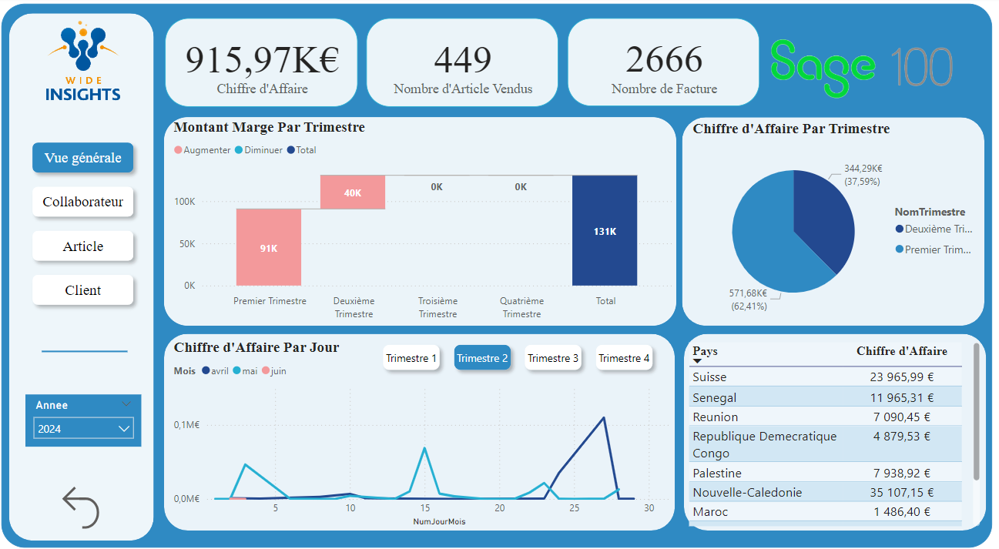
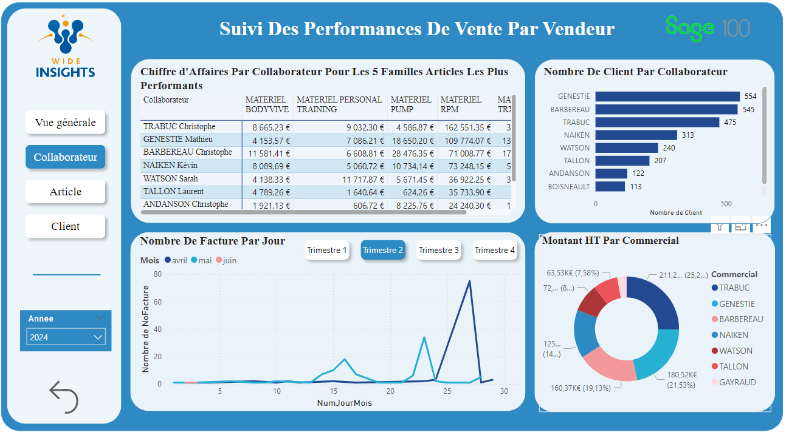
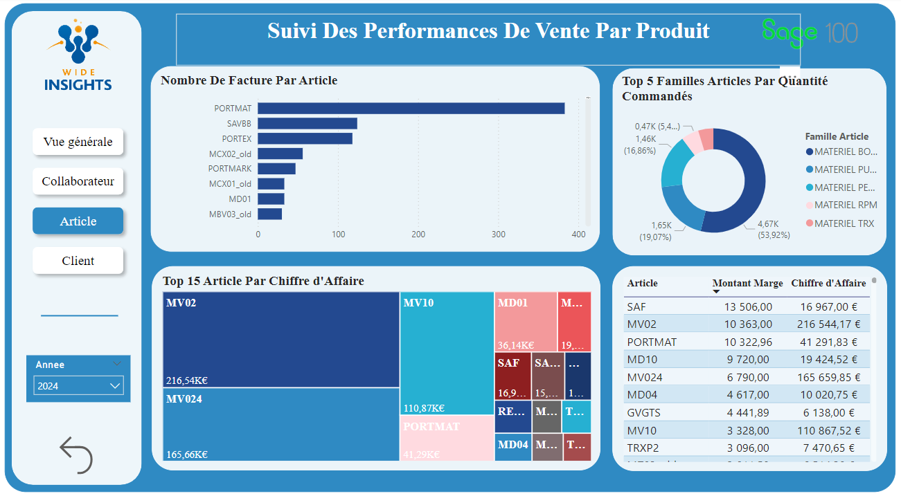
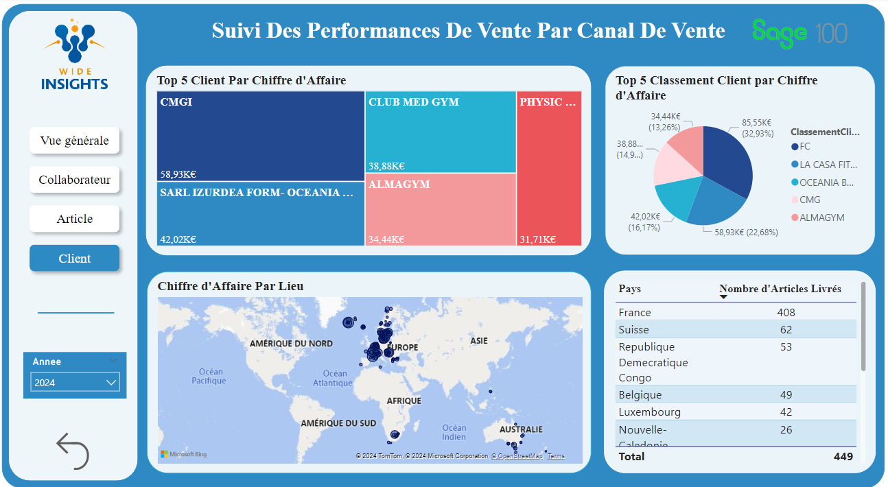

Mes Expériences
Voici un aperçu des projets et stages que j'ai réalisés au cours de ma carrière.
02/2024 – 05/2024 : Stage de fin d’études – Wide Insights
- Modélisation multidimensionnelle à partir d'un modèle opérationnel
- Manipulation des données via le langage SQL
- Développement et gestion des processus ETL avec SQL Server Integration Services (SSIS)
- Création et gestion d'une table d'audit pour le suivi et la validation des opérations de données
- Conception et élaboration d'un cube d'analyse des ventes avec SQL Server Analysis Services (SSAS) pour une analyse en profondeur des performances commerciales
- Déploiement et automatisation des projets SSIS et SSAS pour assurer une mise à jour continue et fiable des données
- Création de tableaux de bord interactifs et dynamiques avec Power BI pour visualiser les données et fournir des insights exploitables aux décideurs
Photos du travail




Vidéo démonstrative
06/2023 – 07/2023 : Stage de fin d’année – Wide Insights
- Réalisation d'une recherche approfondie sur le domaine de l'informatique décisionnelle
- Analyse du module commandes du datamart à l'aide de requêtes SQL via SQL Server Management Studio
- Exploration des fonctionnalités et des capacités de Power BI
- Développement d'un tableau de bord interactif avec Power BI